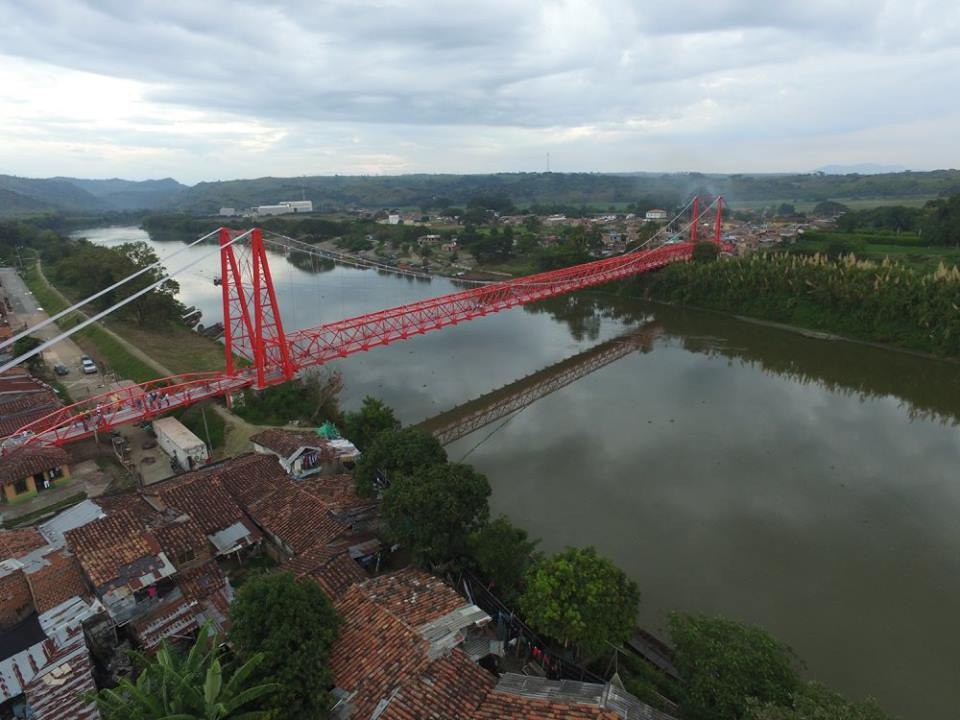
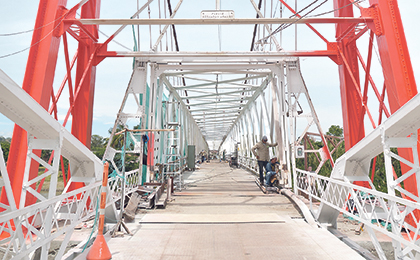
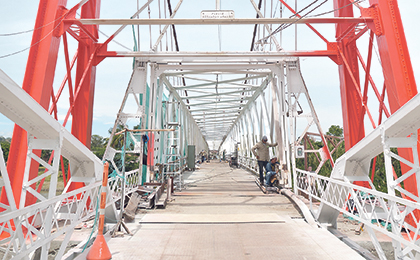
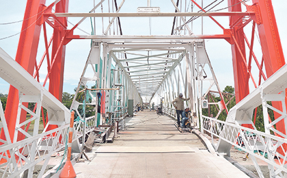

Puente Bernardo Arango
La Virginia, Risaralda

 


Descripción
El Puente Bernardo Arango es un importante punto histórico y turístico en La Virginia. Este puente no solo conecta físicamente dos orillas del río Cauca, sino que también representa un importante patrimonio cultural de la región. Ofrece vistas espectaculares y es un lugar perfecto para observar atardeceres.
Características
- 🌉 Puente histórico
- 🌅 Vistas panorámicas
- 🎣 Pesca recreativa
- 📸 Punto fotográfico
- 🚶♂️ Paseo peatonal
- 🌊 Vista al río Cauca
- 🌆 Atardeceres espectaculares
Horarios y Precios
Acceso:
24 horas
Días:
Todos los días
Entrada:
Gratuita
Restaurantes cercanos
-
Restaurante El Fogón Paisa
- Comida típica antioqueña y risaraldense
- Ambiente tradicional
-
Café La Cumbre
- Cafés especiales
- Repostería artesanal
- Ambiente relajado
-
Asadero Donde Jairo
- Carnes a la parrilla
- Ambiente familiar
Alojamientos cercanos
-
Hotel La Riviera
- Ubicación: Centro del municipio
- Habitaciones cómodas
- Servicio personalizado
-
Finca Hotel El Paraíso
- Ubicación: Afueras de La Virginia
- Entorno natural
- Ambiente tranquilo
-
Hostal Mirador del Cauca
- Vistas al río Cauca
- Experiencia acogedora
- Ambiente auténtico
Recomendaciones
- 📸 Mejor hora para fotos: atardecer
- 🧥 Protección solar y gorra
- 💧 Llevar agua
- ⚠️ Precaución en días lluviosos
- 🎣 Consultar permisos para pesca